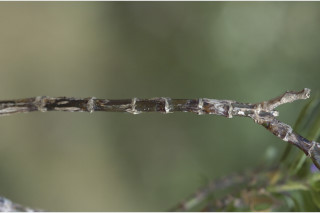
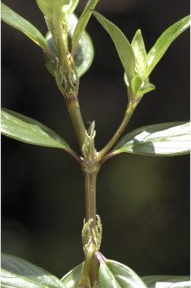
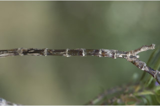
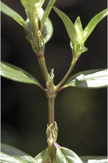
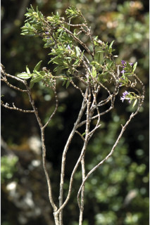
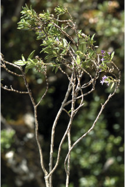
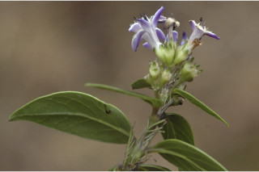
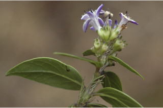

Large shrubs to small trees
ದೊಡ್ಡ ಗಾತ್ರದ ಪೊದೆಗಳಿಂದ ಸಣ್ಣ ಗಾತ್ರದ ಮರಗಳು.
Large shrubs to small trees
பெரிய குத்துச்செடி முதல் சிறிய மரம்
Bark brownish, smooth; blaze cream.
ತೊಗಟೆ ಕಂದು ಛಾಯೆಯಲ್ಲಿದ್ದು ನಯವಾಗಿರುತ್ತದೆ;ಕಚ್ಚು ಮಾಡಿದ ಜಾಗ ಕೆನೆ ಬಣ್ಣದಲ್ಲಿರುತ್ತದೆ.
Bark brownish, smooth; blaze cream.
மரத்தின் பட்டை ப்ரவுன் நிறமானது, வழுவழுப்பானது; உள்பட்டை கீரிம் நிறமானது.
Young branchlets angular, glabrous.
ಎಳೆಯ ಕಿರುಕೊಂಬೆಗಳು ಕೋನಗಳನ್ನು ಹೊಂದಿದ್ದು, ರೋಮರಹಿತವಾಗಿರುತ್ತವೆ.
Young branchlets angular, glabrous.
சிறிய நுனிக்கிளைகள் குறுக்குவெட்டுத் தோற்றத்தில் கோணங்களுடையது, உரோமங்களற்றது.
Leaves simple, opposite, decussate, clustered at twig ends; stipule laciniate, interpetiolar, basally connate, caducous and leaving scar, glabrous; petiole ca. 0.2 cm long, planoconvex in cross section, glabrous; lamina 1.2-3 x 0.2-0.7 cm, ovate -lanceolate, apex acute with blunt tip, base acute to truncate, margin entire and revolute, coriaceous, glabrous beneath; midrib slightly canaliculate above; secondary_nerves 4 pairs, not prominent; tertiary_nerves obscure.
ಎಲೆಗಳು ಸರಳವಾಗಿದ್ದು ಕತ್ತರಿಯಾಕಾರದ ಅಭಿಮುಖ ಜೋಡನಾ ವ್ಯವಸ್ಥೆಯಲ್ಲಿದ್ದು ಕುಡಿಕೊಂಬೆಗಳ ತುದಿಯಲ್ಲಿ ಗುಂಪಾಗಿರುತ್ತವೆ; ಕಾವಿನೆಲೆಗಳು ಆಳವಾದ ಸೀಳಿಕೆಗಳನ್ನು ಹೊಂದಿದ್ದು ತೊಟ್ಟುಗಳ ನಡುವೆ ಇರುತ್ತವೆ,ಬುಡ ಬಾಗದಲ್ಲಿ ಸಂಯುಕ್ತವಾಗಿರುತ್ತವೆ ಮತ್ತು ಉದುರಿದಾಗ ಗುರುತನ್ನು ಉಳಿಸುತ್ತವೆ ಹಾಗೂ ರೋಮರಹಿತವಾಗಿರುತ್ತವೆ; ತೊಟ್ಟುಅಂದಾಜು, 0.2 ಸೆಂ.ಮೀ.ವರೆಗಿನ ಉದ್ದವಿದ್ದು,ಅಡ್ಡ ಸೀಳಿದಾಗ ಸಪಾಟ ಪೀನ ಮಧ್ಯದ ಆಕಾರ ಹೊಂದಿರುತ್ತದೆ ಮತ್ತು ರೋಮರಹಿತವಾಗಿರುತ್ತದೆ;ಪತ್ರಗಳು 1.2-3 X 0.2 –0.7 ಸೆಂ.ಮೀ. ಗಾತ್ರ, ಅಂಡ-ಭರ್ಜಿಯ ಆಕಾರ ಹೊಂದಿದ್ದು, ಮೊಂಡಾಗ್ರವುಳ್ಳ ಚೂಪಾದ ತುದಿ, ಚೂಪಾದುದರಿಂದ ಛಿನ್ನಾಗ್ರ ಮಾದರಿವರೆಗಿನ ಬುಡ, ನಯವಾದ ಮತ್ತು ಹಿಂಚಾಚಿದ ಅಂಚು,ತೊಗಲನ್ನೋಲುವ ಮೇಲ್ಮೈ ಹೊಂದಿದ್ದು ತಳಭಾಗದಲ್ಲಿ ರೋಮರಹಿತವಾಗಿರುತ್ತವೆ; ಮಧ್ಯನಾಳ ಪತ್ರದ ಮೇಲ್ಭಾಗದಲ್ಲಿ ತೆಳುವಾದ ಕಾಲುವೆಗೆರೆ ಸಮೇತವಿರುತ್ತದೆ;ಎರಡನೇ ದರ್ಜೆಯ ನಾಳಗಳು 4 ಜೋಡಿಗಳಿದ್ದು ಪ್ರಮುಖವಾಗಿರುವುದಿಲ್ಲ ; ಮೂರನೇ ದರ್ಜೆಯ ನಾಳಗಳು ಅಸ್ಪಷ್ಟ.
Leaves simple, opposite, decussate, clustered at twig ends; stipule laciniate, interpetiolar, basally connate, caducous and leaving scar, glabrous; petiole ca. 0.2 cm long, planoconvex in cross section, glabrous; lamina 1.2-3 x 0.2-0.7 cm, ovate -lanceolate, apex acute with blunt tip, base acute to truncate, margin entire and revolute, coriaceous, glabrous beneath; midrib slightly canaliculate above; secondary_nerves 4 pairs, not prominent; tertiary_nerves obscure.
இலைகள் தனித்தவை, எதிரடுக்கமானவை, குறுக்குமறுக்கானவை, சிறுகிளைகளின் நுனியில் இலைகள் கூட்டமாக மற்றும் நெருக்கமாக காணப்படும்; இலையடிச்செதில் விளிம்புகளில் பிளவுகளுடையது, இலையடிச்செதில் இருஇலைக்காம்பிற்கு நடுவே (இண்டர்பீட்டியோலார்) உடையது, தளத்தில் இணைந்தவை, எளிதில் உதிரக்கூடியது மற்றும் தழும்புகளை ஏற்படுத்துகின்றன, உரோமங்களற்றது; இலைக்காம்பு 0.2 செ.மீ. நீளமானது, குறுக்குவெட்டுத் தோற்றத்தில் பிளேனோகான்வக்ஸ், உரோமங்களற்றது; இலை அலகு 1.2-3 X 0.2-0.7 செ.மீ., முட்டை-ஈட்டி வடிவானது, அலகின் நுனி கூரியதுடன் அதன் முனை மழுங்கியது, அலகின் தளம் கூரியது முதல் சதுர வடிவானது, அலகின் விளிம்பு முழுமையானது மற்றும் பின்புறம் வளைந்து (ரெவலுட்) காணப்படும், கோரியேசியஸ், உரோமங்களற்றது; மையநரம்பு மேற்புறத்தில் அலகின் பரப்பைவிட சிறிது பள்ளமானது; இரண்டாம் நிலை நரம்புகள் 4 ஜோடிகள், தெளிவற்றது; மூன்றாம் நிலை நரம்புகள் மற்றும் பிற நரம்புகள் கண்களுக்கு புலப்படாது.
Inflorescence compact cymes, terminal; flowers subsessile, lilac outside and white within.
ಪುಷ್ಪಮಂಜರಿಗಳು ತುದಿಯಲ್ಲಿನ ಒತ್ತಾಗಿ ಜೋಡಣೆಗೊಂಡ ಮಧ್ಯಾರಂಭಿ ಮಾದರಿಯವು; ಹೂಗಳು ಉಪ-ತೊಟ್ಟನ್ನು ಹೊಂದಿದ್ದು ಊದಾ ಬಣ್ಣದ ಹೊರ ಆವರಣ ಹಾಗೂ ಬಿಳಿಯ ಒಳ ಆವರಣದ ಸಮೇತವಿರುತ್ತವೆ;
Inflorescence compact cymes, terminal; flowers subsessile, lilac outside and white within.
மஞ்சரி குட்டையான சைம் வகை மஞ்சரி, தண்டின் நுனியில் காணப்படும்; மலர்கள் காம்பற்றது அல்லது மிகச்சிறிய காம்புடையது, வெளிப்புறம் லைலாக் நிறமானது மற்றும் உட்புறம் வெள்ளை நிறமானது.
Capsule, obovate, glabrous with crown of persistent calyx lobes; seeds 2.
ಸಂಪುಟ ಫಲ ಬುಗುರಿಯ ಆಕಾರ ಹೊಂದಿದ್ದು ರೋಮರಹಿತವಾಗಿರುತ್ತದೆ ಹಾಗೂ ಶಾಶ್ವತವಾಗಿ ಉಳಿಯುವ ಪುಷ್ಪಪಾತ್ರೆಯ ಎಸಳುಗಳ ಸಮೇತವಿರುತ್ತವೆ;ಬೀಜಗಳ ಸಂಖ್ಯೆ 2.
Capsule, obovate, glabrous with crown of persistent calyx lobes; seeds 2.
வெடிகனி (கேப்சியூல்), தலைகீழ் முட்டை வடிவானது, உரோமங்களற்றது, கனியின் நுனியில் நிரந்தரமான புல்லி இதழ்கள் உடையது; விதைகள் 2.
 





 


 
